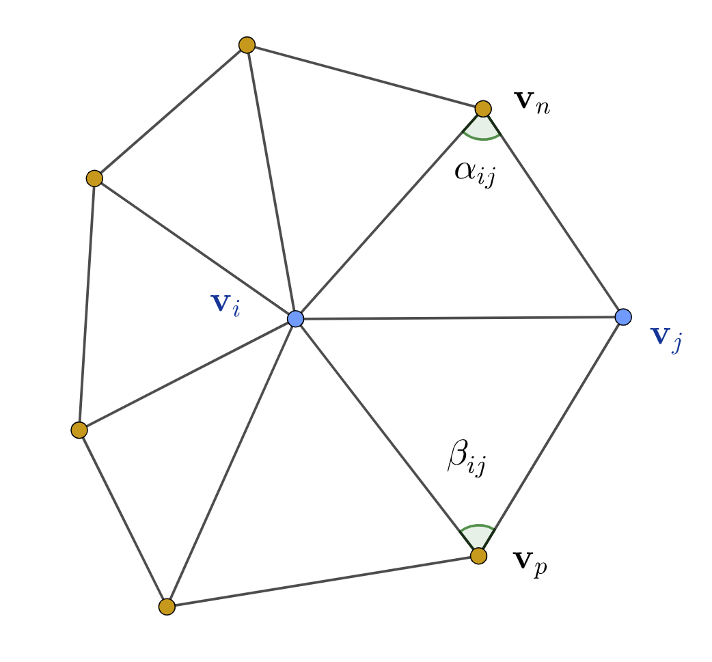

Compute the mesh Laplacian (Laplace-Beltramin Operator)
\[ L = D + LU \]where the decomposition is for convenience, and the diagonal matrix \(D\) has the form
\[ (D)_{ii} = w_{ii} \]and the lower-upper matrix is
\[ (LU)_{ij} = \begin{cases} -w_{ij} & \text{if } \, j \in N(i)\\ 0 & \text{otherwise} \end{cases} \]and the weights are
\[ w_{ij} = \begin{cases} \text{deg}(v_i) & \text{if}\, i = j\\ 1 & \text{if}\, j \in N(i)\\ 0 & \text{otherwise} \end{cases} \]for the uniform Laplacian, or cotangent weights for the cotangent Laplacian
\[ w_{ij} = \begin{cases} \sum_{k \in N(i)} w_{kj} & \text{if}\, i = j\\ \frac{\cot \alpha_{ij} + \cot \beta_{ij}}{2} & \text{if}\, j \in N(i)\\ 0 & \text{otherwise} \end{cases} \]Remark
The As-Rigid-As-Possible deformation techniques require the use of a positive weighting scheme to guarantee the correct minimization of the energy. When using the default cotangent weighting scheme, this means that the input surface mesh must be clean. That is, that for all edges in the surface mesh the sum of the angles opposite to the edge in the incident triangles is less than \(\pi\). In the implementation below, we use a uniform Procrustes, that is, the weights are all equal to one. This produces acceptable results. The mesh has many cells with negative cotangent weights.
and the soft constraints for the target positions
\[ \sum_{v_j \in N(v_k)} w_{kj} (\hat{v}_k - \hat{v}_k) + \gamma \hat{v}_k = \sum_{v_j \in N(v_k)} \frac{w_{kj}}{2} (R_k + R_j) (v_k - v_j) + \gamma \hat{c}_k \]Remark
The linear system is solved with a Cholesky spar matrix solver.
Remark
Computation of the cotangent weights
| \[ \cot \alpha_{ij} = \frac{(v_i - v_n)\cdot (v_j - v_n)}{||(v_i - v_n)\times (v_j - v_n)||} \] \[ \cot \beta_{ij} = \frac{(v_j - v_p)\cdot (v_i - v_p)}{||(v_j - v_p)\times (v_i - v_p)||} \] |  |